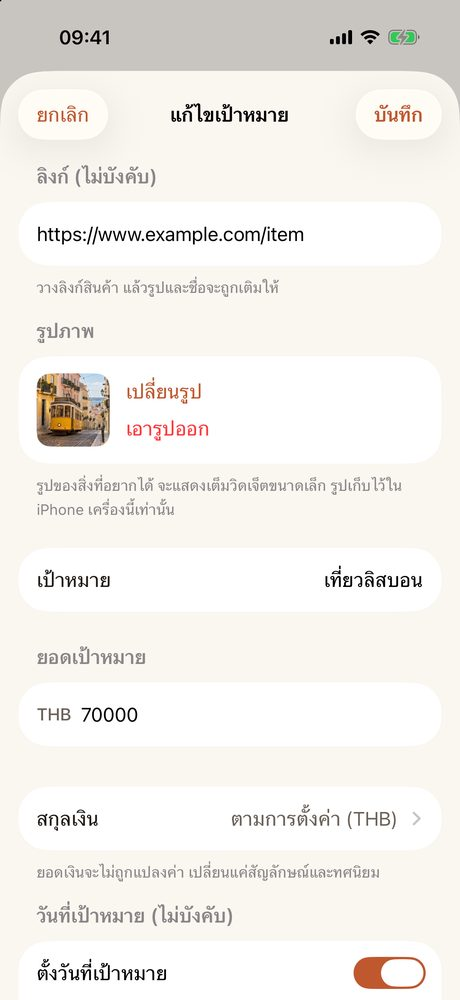

Savebar · คู่มือ · 日本語
วิธีวางเป้าหมายการออมไว้บนหน้าจอโฮมของ iPhone
การออมเพื่ออะไรสักอย่างจะง่ายขึ้นเมื่อมองเห็นได้ วิดเจ็ตจะวางแถบที่บอกว่าออมไปแล้วเท่าไรและเหลืออีกเท่าไร ไว้ในที่ที่คุณมองหลายครั้งต่อวัน และให้หยอดเงินได้ในแตะเดียว
วิธีตั้งค่าด้วย Savebar ใช้เป้าหมาย 1 อันและวิดเจ็ตขนาดเล็กได้ฟรี
1. สร้างเป้าหมาย
- เปิด Savebar แล้วแตะ +
- ใส่ชื่อและ ยอดเป้าหมาย
- ไม่บังคับ: เปิด “ตั้งวันที่เป้าหมาย” เพื่อดูจำนวนวันที่เหลือและยอดที่ต้องออมต่อวัน
- ไม่บังคับ: วางลิงก์สินค้าในช่อง “ลิงก์” แล้วรูปภาพและชื่อจะถูกดึงมาจากหน้านั้นให้เอง
2. เลือกยอดสำหรับปุ่มวิดเจ็ต
ที่ “ยอดบนปุ่มวิดเจ็ต” ให้ใส่ยอดที่คุณมักเก็บออมแต่ละครั้ง ปุ่มบนวิดเจ็ตจะหยอดยอดนี้ในแตะเดียวโดยไม่ต้องเปิดแอป

3. วางวิดเจ็ตบนหน้าจอโฮม
- แตะค้างที่พื้นที่ว่างบนหน้าจอโฮมจนแอปเริ่มสั่น
- แตะ “แก้ไข” (หรือ +) ที่มุมบน แล้วค้นหา “Savebar”
- เลือกขนาด เล็ก แล้วแตะ “เพิ่มวิดเจ็ต”
ทุกครั้งที่เก็บเงิน ให้แตะปุ่มยอดเงินบนวิดเจ็ต แถบและเปอร์เซ็นต์จะขยับทันทีตรงนั้น

วิดเจ็ตขนาดใหญ่ในภาพนี้ที่แสดงหลายเป้าหมาย เป็นส่วนหนึ่งของ Savebar Pro
อยากได้มากกว่านี้?
Savebar Pro ซื้อครั้งเดียว ไม่ใช่การสมัครสมาชิก:
- เป้าหมายไม่จำกัด
- วิดเจ็ตขนาดกลางและขนาดใหญ่ที่แสดงหลายเป้าหมาย และปุ่มยอดเงินได้สูงสุด 2 ปุ่มต่อเป้าหมาย
- วิดเจ็ตหน้าจอล็อค
- แอป Apple Watch ที่มีปุ่มยอดเงินแบบเดียวกัน
คำถาม
เชื่อมต่อกับบัญชีธนาคารไหมไม่ คุณใส่ยอดเงินเอง จึงไม่ต้องล็อกอินและไม่มีอะไรต้องเชื่อมต่อ
สร้างเป้าหมายได้ฟรีกี่อันหนึ่งอัน พร้อมวิดเจ็ตหน้าจอโฮมขนาดเล็ก ส่วน Savebar Pro ซึ่งซื้อครั้งเดียว ให้สร้างเป้าหมายได้ไม่จำกัด มีวิดเจ็ตขนาดกลางและขนาดใหญ่ที่แสดงหลายเป้าหมาย วิดเจ็ตหน้าจอล็อค และแอป Apple Watch
หยอดยอดที่ไม่มีบนปุ่มได้ไหมได้ เปิดเป้าหมายในแอปแล้วแตะ “+ หยอด” เพื่อใส่ยอดเท่าไรก็ได้
เลือกเป้าหมายที่จะแสดงบนวิดเจ็ตได้อย่างไรแตะวิดเจ็ตค้างไว้ แตะ “แก้ไขวิดเจ็ต” แล้วเลือกเป้าหมาย
ดาวน์โหลด Savebar บน App Store
ไม่มีการสมัครสมาชิก ไม่มีโฆษณา ไม่ต้องล็อกอินธนาคาร ไม่ต้องมีบัญชี · เกี่ยวกับ Savebar
English · 日本語 · 简体中文 · 繁體中文 · 한국어 · Deutsch · Français · Español · Italiano · Nederlands · Polski · Português · Русский · ไทย · Türkçe · Українська · Tiếng Việt · Bahasa Indonesia